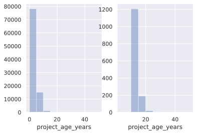
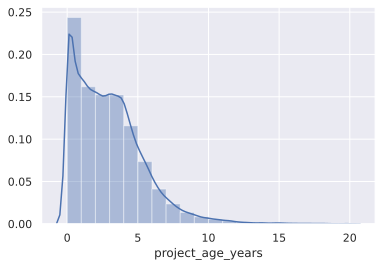
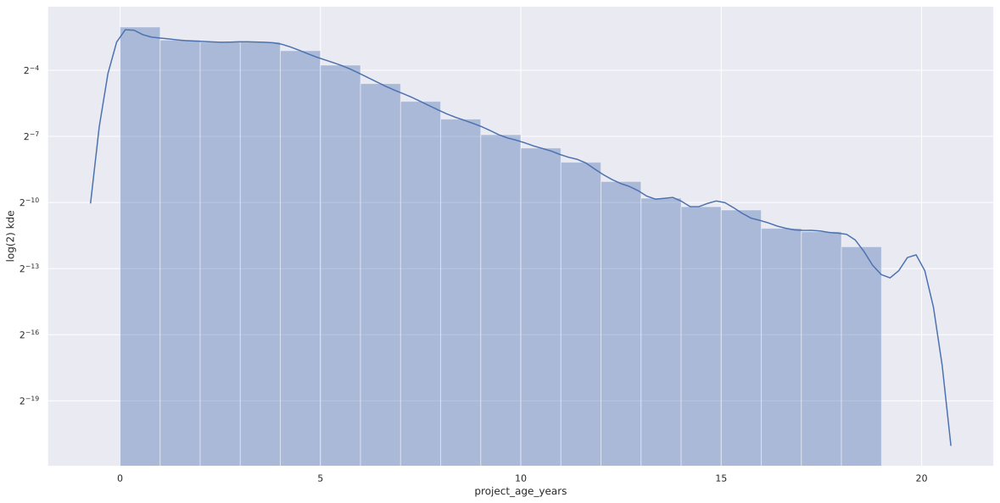
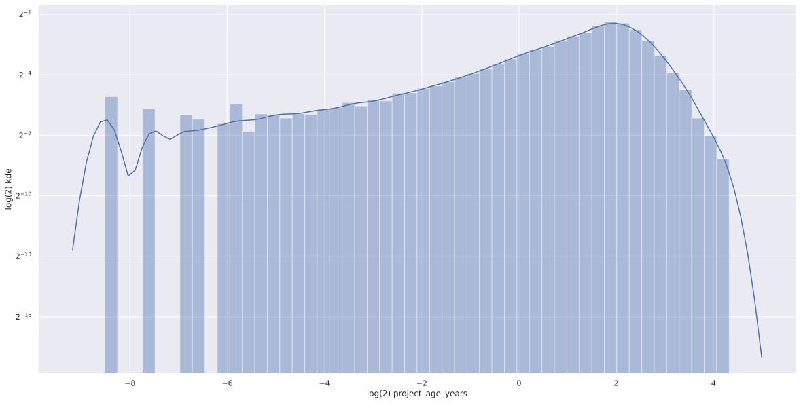
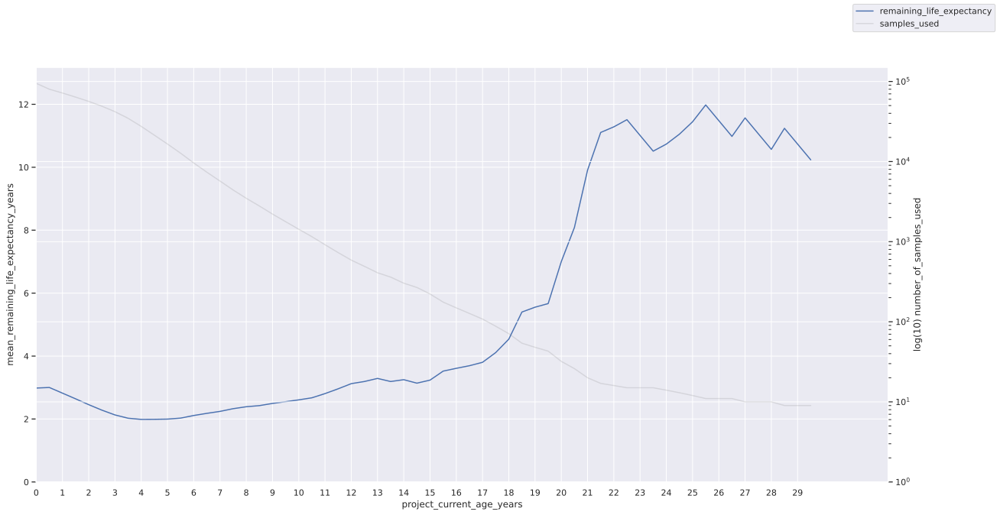
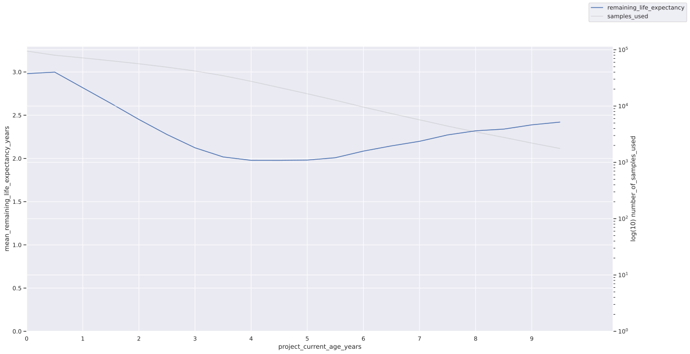

How long should we expect themes and technologies in software engineering to last? In this post, we'll look at how long individual projects "last" based on data from GitHub and try to draw conclusions around what that means for choosing foundational software.
Software comes and goes - except when it doesn't; we can all think of technologies like Fortran and COBOL that have been around forever, and continue to fulfil a useful purpose in their particular niche. When we're building something new, what kind of technologies should we build on? Should we seek maturity and stability - perhaps seeking to reduce the constant churn of keeping up with the latest updates, and benefit from the battle-hardening effect of exposure to the real world and the passing of time; or should we eschew staleness, and build on foundations that aren't already aproaching the end of their shelf-life - benefiting from the latest advances in technology, and learning from the mistakes of those who went before. When we look at our depenedencies on other projects, can we guess how long they will continue to be around for?
It goes without saying that our choice will depend on what it is we're building; are we most concerned with getting an idea in front of users ASAP, or with the ongoing cost of maintenance once we've shipped? Are we reasonably sure about the problem space, or do we expect a lot of iteration before we have the basics right?
what can we know?
One way to start thinking about answering these questions would be to talk about the longevity of tools and projects. Can we make predictions about how long a given technology will be around, given its history? That's what we'll look at in the rest of this post: can we judge whether a project will still be around in a few years' time based on how long it has been around.
prior art
-
There was a pretty popular blog post a few years ago called choose boring technology. In it, McKinley talks about the idea of innovation tokens - the idea is that you only have so much innovation to spend, and if you go off the beaten path, then you're using those up - by implication, you don't have so many left to spend on your "real" problem (the thing that gave you a reason to write software in the first place).
-
Taleb and the Antifragile Software folks talk about the Lindy Effect. The idea here is that we can just a thing's life expentancy by how long it has already been around - and that the life expentancy increases with every year something has been around (contingent on the thing not having some natural upper limit; sofware being an obvious example of something non-perishable).
Inspired by both of these ideas, let's make a hypothesis:
The longer a project has been around, the longer its expected remaining life.
Notice, this prediction is obviously false for things with naturally bounded lifespans, since remaining life expectancy must decrease as you approach that upper bound. But what about software projects?
what can we measure?
GitHub provide a BigQuery dataset comprising 3TB of data on activity around GitHub-hosted open source projects.
This dataset gives us a few things, but most usefully (I hope): commit history. Let's simplify things and say that a project's age is the time between the first and last commit, and that it's said to be "done" if there has been no commit in the last 3 months (i.e. exclude still-active projects from the sample).
Here's the query I used to pull information about the first and last commits for each project:
with commits_by_repo as ( SELECT rname as repo_name, cs.committer.time_sec ts, commit FROM `bigquery-public-data.github_repos.commits` cs CROSS JOIN unnest(cs.repo_name) as rname join `bigquery-public-data.github_repos.sample_repos` sam_rs on rname = sam_rs.repo_name where sam_rs.watch_count > 3 and committer.time_sec >= 2674800 ) select cs.repo_name as project_name, min(cs.ts) earliest_commit_sec, max(cs.ts) latest_commit_sec, count(distinct commit) number_of_commits from commits_by_repo cs group by project_name order by earliest_commit_sec asc
And here's the notebook I used to analyze the results and produce the plots below. If you want to follow along you'll have to pull the data out of BigQuery and point the notebook at your own CSV file.
A few remarks:
-
The data quality here is... patchy. A few examples:
- a JavaScript project with commits before the invention of HTML
- More than one version of golang with commits that look like they might be imported from the very inception of C
- This project with commits nearly 100 years in the future
None of this should be hugely surprising; people can write whatever they want in their commit history, and sometimes they (or their tools) will write nonsense! To them, it may not be nonsense.
-
The GitHub press release says that "Forks and/or un-notable projects not included." I'm not so sure about that (c.f. the multiple copies of Go mentioned above). Again, hardly surprising; it wouldn't be easy for GitHub to reliably detect forks; it's perfectly possible to have two completely separate projects that happen to share some commits, but neither one obviusly be a fork of the other.
In the query above, I've taken a few steps to try to filter out things that I'm guessing are going to be more signal than noise:
- Ignore anything with a timestamp in Jan 1970. There certainly was software development happening at the time, but from eyeballing the data, there're also a lot of commits with dodgey timestamps.
- Join on the somewhat cut-down
sample_reposdataset, and filter for things with some stars. This will exclude a lot of one-shot "hobby" projects that I suspect would be a good addition to the dataset (many datapoints for "projects that live hardly any time at all"), but I also suspect them of containing lots of junk, and hope it might cut out some personal mirrors etc.
So, what do we find?
exploration
Here are some plots of the distributions of project age.
First, a straightforward plot of the distribution of project lifetimes. On the left is the whole dataset, and on the right are just those whose lifetimes exceed 10 years: 
There are only 32 projects in the dataset with an age > 20 years. That's such a small number compared to the earlier samples that I'm going to exclude anything with age > 20 years from the following distribution plots. Chopping off this long tail may change the shape of the distribution, but I'll justify it by mentioning that even within this small sample, there are quite a few projects that are clearly noise rather than signal:
- scwuaptx/CTF - writeups of CTFs, which look to only really go back as far as 2015
- eregon/mozart-graal - a project built on top of the GraalVM, whose first "production ready" release was in 2019.
The cost is excluding (several forks of...) projects like Emacs.
Each of the following graphs is a seaborn distplot showing project age (in years) on the x-axis and the kernel density estimate the y-axis.
First, the distribution of what's left after filtering: 
Next, the same data on a log scale (filtered for only projects with age < 20 years): 
Finally, the same data on a log-log scale: 
A couple of observations:
- Power-law distributions (of the type described by Taleb's expression of the Lindy Effect above) show a straight line on a log-log plot as a necessary-but-not-sufficient condition. We see something a bit like that, after around the 4 year mark.
- We see a clear straight downward slope on the log-graph, once a project reaches its fourth year.
results
Now, back to our hypothesis:
The longer a project has been around, the longer its expected remaining life.
Let's look at two graphs of expected (mean) lifespan (on the y-axis), predicated on current lifespan in years (on the x-axis). The nth-percentile lines show the distribution of our sample data. First, let's zoom out and get the fullest picture we can; we'll re-include the 32 projects with a lifespan > 20 years:

Woah there. A couple of things jump out:
- This graph seems to imply that our hypothesis has some merit (in terms of mean life expectancy, at least), in a big way for older projects: a project's remaining life expectancy ramps up damatically after about 15 years or so.
- Our 30th- and 50th-percentile lines stay low, never exceeding the 2 year mark while we have >100 projects in the sample.
- Mean life expectancies seem to be dominated by a few very long-lived projects, but remember, we've only got 32 data points after the 20 year mark, and as we discussed above, it's not clear that these represent particularly useful data points. To emphasize how little data we have here, I've included the sample counts on the right-hand axis (in grey).
What can we do about this?
- If we chop the data down to exclude data points greater than, say, 15 years, then we will be imposing an artificial limit on the upper bound of life expectancy. This would rule out our hypothesis by construction.
- We can keep all the data, but only look at the remaining life expectancies for those with "enough" data points after them to make some resonable judgement of what that expectancy might be.
I've done... a mix:
- I've projected the remaining life expectancy only of projects up to 10 years of age. There are still a decent number of projects older than that that we can hope to use to estimate a life expectancy.
- To estimate that remaining life expectancy, I've excluded projects where the recorded life span is > 30 years. The projects in that group are just too noisey to consider.
So, I have imposed an artificial limit on project life (30 years), but hopefully that's high enough that it's not going to skew the results for projects we consider (10 years or younger). I'd love to hear from someone more statistically literate if there's a better way to go about this - I'm sure there must be.
So, finally, here's a graph showing expected remaining life expectancy of a project, given its current age.

Nothing really jumps out here; so I'll venture some more modest conclusions:
- By our measure of project lifetime, age doesn't seem to tell us anything much about expected remaining life expectancy. That's more "lindy" than, say, remaining human life expectancy (broadly, decreases as we age), but doesn't show the kind of growth I expected.
- Even projects that have been going for some years are more likely than not to meet our definition of "done" over the next two. That certainly doesn't match my intuition; I expected that network effects and inertia would play a big part in extending the longevity of projects that had been going for a long time. Perhaps that's an indictment of our definition of "done".
further work
Better analysis:
- I've used a very crude measure of project liveness: looking only at
commits. It's perfectly possible for a project to have an active and
engaged community, with no code changes for a few months. A smattering of
things I'd want to think about for a really confident idea of a project
being "done" might include:
- Are new issues being filed in the issue tracker? This implies that someone is still using it.
- Are issues being responded to?
- Is there an active StackOverflow community?
- Cohorting of project types; perhaps libraries have very different lifecycles to programming languages? How about frameworks vs. libraries? Applications? Personal websites, like this one?
Sources of bias in the data:
- How to account for still-live projects? This analysis excludes any projects that are still active - and if the original hypothesis is true (longer-lived projects will stay active), then this sampling bias will skew results against that conclusion.
- There are plenty of long-lived projects that would meaningfully contribute to the long tail. By excluding the really "old" projects, I'm excluding exactly those that could provide the most interesting data points.
- The original dataset as derived from the GitHub public data is not reflective
of all open source projects. Some notable exclusions:
- Corporate / closed-open-source. These projects have diffirent fundamentals affecting their lifetimes. Whilst many open source projects rest on the labour of a few individuals, corporates replace individual team members, and I venture that most professional engineers will have at some point worked on systems where none of the original authors is still on the team.
- There is an open-source world beyond GitHub, and the older the project, the more likely that it had some established code hosting solution before GitHub rose to prominence. Some of those projects will be included via GitHub-hosted mirrors, but certainly not all.